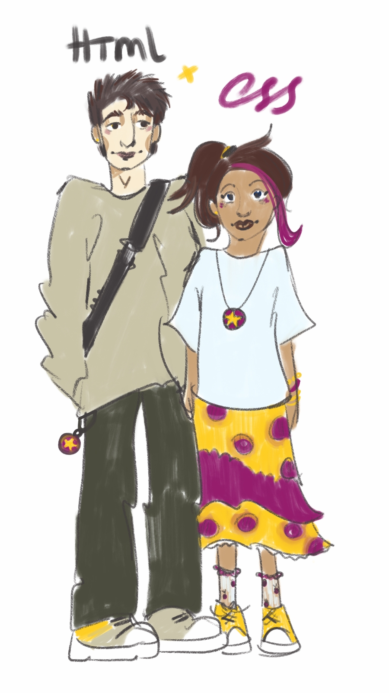
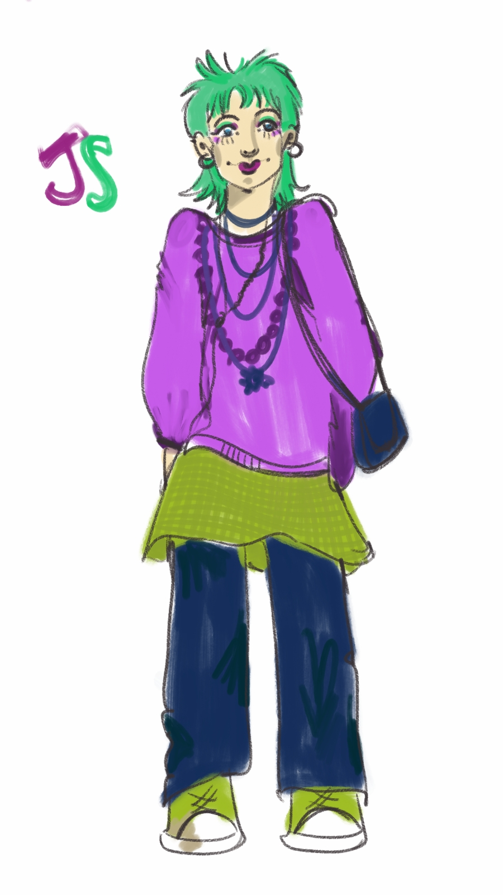
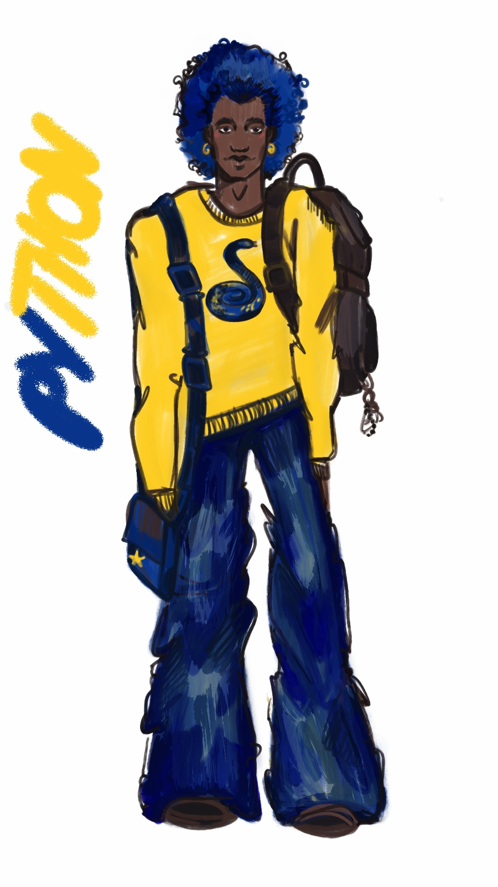
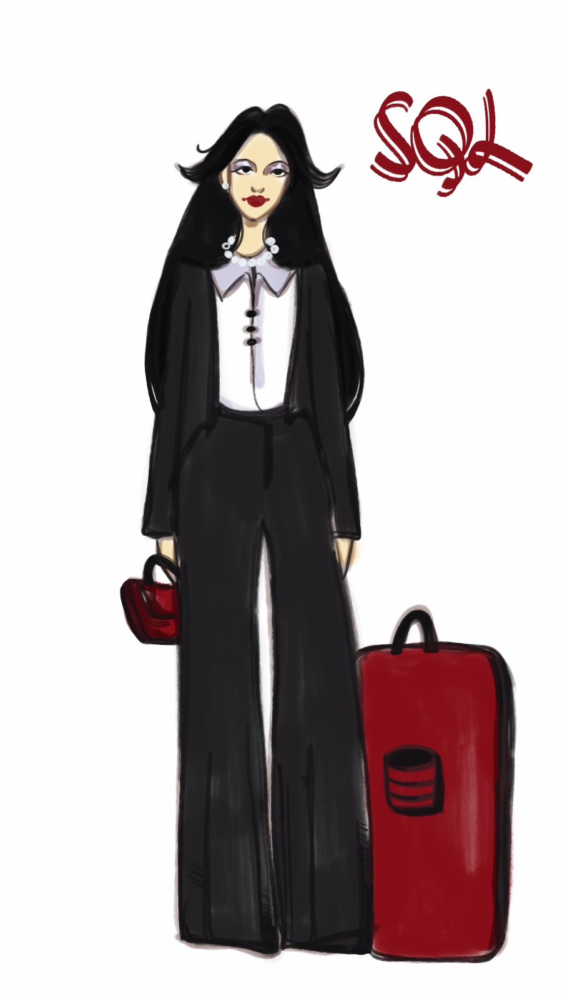
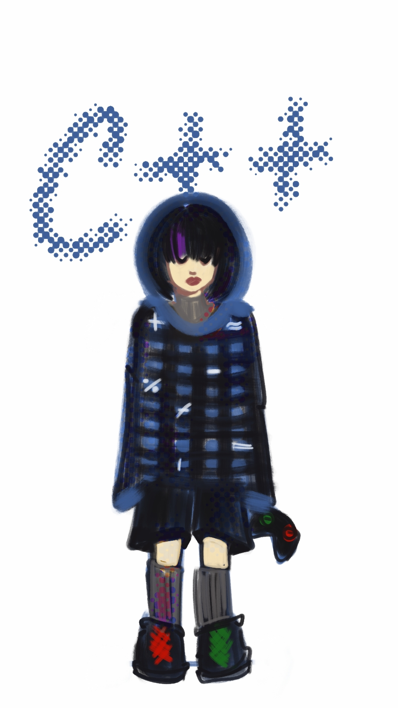

what would coding languages be if they were just passing-by people?
Hallo zusammen!
Personalisierung ist ein beliebtes Hobby von Künstlern, Filmemachern
und Designern. Wir stellen uns gerne vor, was für Menschen wir
essen, welche Farben wir verwenden, welche sozialen Medien wir
nutzen und so weiter. Um meine Liebe zur Kunst und zum Programmieren
zu verbinden, möchte ich euch verschiedene Programmiersprachen
vorstellen, die ich bei der Umsetzung der von mir entworfenen
Figuren ausprobiert habe.
HTML & CSS
Ein klassisches High-School-Paar. HTML (sein Name ist
wahrscheinlich Henry oder so ähnlich), der klassische Typ, der
seine Freizeit mit Lesen oder manchmal mit Gesprächen über
Philosophie verbringt, und CSS (ich glaube, ihr Name ist Casey)
mit ihrer Golden-Retriever-Persönlichkeit und ihren ständig
neuen Hobbys gleichen sich auf eine Art und Weise aus, wie es
kein anderes Paar kann.
Auch das ist typisch für sie:
Sie sind kein extrovertiertes Paar: Freitagabende sind Tage
mit Netflix und Entspannung.
HTML kleidet sich nur in H&M (ironischerweise) oder Zara
CSS kocht gerne und macht oft Unordnung in der Küche, die HTML
dann aufräumen muss
Sie planen, sich ein Haustier anzuschaffen, aber CSS möchte
eine Katze, während HTML einen Labrador möchte.


JAVA SCRIPT
Die Person, deren Musik so laut ist, dass man sie durch ihre
Kopfhörer hören kann. Sie sind beliebt in den sozialen Medien,
ein echter Trendsetter, aber auch schwierig zu kommunizieren -
obwohl sie sehr witzig und interessant sind, kühlen sie schnell
ab und sind völlig unbeständig.
Ebenfalls typisch für sie:
Sie färben sich alle drei Wochen die Haare (Ramona
Flowers-Referenz!)
Sie lieben Second-Hand-Läden und Schaufensterbummel
Sie korrigieren Sie, wenn Sie ein falsches Pronomen verwenden
(aggressiv)
Sie sind mit CSS befreundet und konkurrieren mit Python
PYTHON
Die Art von Mann, mit dem man sofort befreundet sein möchte. Man
kann sich sehr gut mit ihm unterhalten, er ist ein meisterhafter
Problemlöser und es macht einfach Spaß, mit ihm zusammen zu
sein. In meiner Welt heißt er höchstwahrscheinlich James oder
Brian und hat immer seine gesamte Ausrüstung dabei und sieht
dabei irgendwie immer noch cool aus.
Auch typisch für sie:
Er ist mit allen befreundet und spricht mehrere Sprachen
Minimalist und qualitätsorientiert: Wenn er eine gute
Schriftrolle findet, kauft er wahrscheinlich 6 weitere, um sie
jeden Tag zu tragen
Er hat eine perfekte Handschrift
Er ist sehr offen und vertritt immer seine Meinung


SQL
Ein echtes Beispiel für eine Chefin. Sie ist so sehr auf Details
fixiert, dass es anfangs überwältigend sein kann, aber auch sehr
professionell und zuverlässig. SQL arbeitet ständig und
übernimmt trotzdem immer noch neue Aufgaben. Wenn du also mit
ihr ausgehen möchtest, wirst du wahrscheinlich um ihre Freizeit
in 5 Wochenkonkurrieren. Es könnte allerdings schwierig sein,
ihr Interesse zu wecken, da sie nur mit Excel ausgeht.
Ebenfalls typisch für sie:
Nicht sehr kreativ, aber unschlagbar in Mathe
Hört zum Vergnügen Opern
Sortiert alles nach Farben
Reagiert schnell - sie antwortet wahrscheinlich sofort auf
Nachrichten, auch wenn sie sehr beschäftigt ist.
C++
Ein mystisches, ruhiges Mitglied der Gruppe. Die Figur, die mir
am ehesten einfällt, ist L aus Death Note - snur dass C++ ein
Mädchen ist und Diabetes hat. Viele Leute haben Angst vor ihr
oder lästern über sie (wie auch über alle anderen Mitglieder der
C-Familie). Aber wenn man sie wirklich kennen würde, würde man
vielleicht herausfinden, dass sie ein wirklich offenes,
sensibles Mädchen mit einem guten Geschmack für Computerspiele
ist? *Ich weiß nicht, ich habe es noch nie so weit geschafft.
Ebenfalls typisch für sie:
ist extrem wählerisch, was das Essen angeht
spielt nachts, schläft tagsüber und ernährt sich von
Energiegetränke
Bei ihr zu Hause bietet sie dir Tiefkühlkost an, die du selbst
aufwärmen musst.
Bei der Teamarbeit macht sie die ganze Präsentation selbst,
weil sie sich sicher ist, dass es niemand besser machen kann.

ABER WARTE... WER BIST DU?
Willst du wissen, welcher der sechs Charaktere dir am
ähnlichsten ist?
Dann mach den Test, antworte ehrlich und mach dich bereit,
deine Programmierpersönlichkeit kennenzulernen. Viel
Glück!
Personification is a popular hobby amongst artists, directors and
designers. We love to see what food, colors, social media etc would
be as people. To combine my interest for art and programming, I
introduce you to the various coding languages I tried as characters
I designed mysef.
HTML & CSS
Your classic college sweethearts. With HTML (his name would
probably be Henry or something) being basic classy man who
spends his time reading and occasionally engaging in
philosophical conversations and CSS (probably named Casey) being
the golden retriever of the couple and spending time taking up a
new creative hobby everyday they balance each other out like no
other couple can.
Also typical for this couple:
Not an extraverted pair: Friday Nights are Netflix-and-Chill
Nights.
HTML only dresses in H&M (ironic) or Zara
CSS loves to cook and often burns the whole kitchen which HTML
then has to clean up
They plan on getting a pet but CSS is more of a cat person
whereas HTML wants a Labrador.
JAVA SCRIPT
The one person whose music is so loud you hear it from their
headphones. Popular on social media, a trendsetter and also hard
to talk to because even though they are super funny and
interesting they get bored easily and are also absolutely
unstable.
Also typical for JS:
Dye their hair every three weeks (Ramona Flowers reference)
Love thrift stores and window-shopping
Will correct you on peoples pronouns (aggressively)
Friends with CSS and also in competitive relationship with
Python
PYTHON
The guy you imidiately want to befriend. Super easy to talk to,
a hero of problem solving and also just fun to be around. In my
world Python in probably named James or Brian and hes always
carryng all his hardware around bus somehow still manages to
look cool.
Also typical for Python:
Is friends with literally everyone and also multilingual
Minimalistic and quality oriented: when he finds one good
sweater, he would probably buy 6 more of them to wear everyday
Perfect handwriting
Very straight forward and would always speak his truth
SQL
The ultimate girl boss. So detail oriented it may be
overwhelming at first, but also very professional and reliable.
SQL is always working and taking new tasks, to have a date with
her you would probably need to fight for a spot in 5 weeks from
now. Although it would be complicated to get with her as she's
exclusively dating Excel.
Also typical for SQL:
Not really strong creative side is compensated by examplatory
skills in math
Listens to opera for fun
Sorts everything by colors
A fast responder - she would probably answer right away even
when having a huge amount of work
C++
The mystical, quiet one of the group. The closest figure that
comes to mind in terms of personality is L from Death Note -
except C++ is a girl and diabetic. Lots of people are scared of
her or talking behind her back (the same goes to all of the
members of C family). But maybe if you actually got to know her
you'll find out shes a really helpful sweet girl with a good
taste in computer games? *I don't know, I've never got this far.
Also typical for SQL:
A true definition of picky eater.
Games at night, sleeps at day and survives on energy drinks
At her home she'll serve you frozen food you'll need to heat
up yourself.
At the group work she'll make the whole presentation herself
because she's sure noone can make it as good as her
Привіт усім!
Персоніфікація - це популярне хобі серед митців, режисерів та
дизайнерів. Ми любимо дивитись на те якими людьми були б види їжі,
кольори, соцмережі і так далі. Щоб поєднати мою любов до мистецтва
та програмування, я хочу познайомити вас з різними програмувальними
мовами які я пробувала у втіленні персонажів, які я розробила
власноруч.
HTML & CSS
ласична парочка зі старшої школи. HTML (його скоріш за все звали
б Генрі або шось таке), класичний хлопець що проводить вільний
час читаючи або іноді теревенячи про філософію та CSS (думаю, її
б звали Кейсі) з її golden retriever-характером та постійними
новими хобі балансують одне одного так, як це не вдається жодній
іншій парі.
Також типово для них:
Не екстравертна пара: Вечори п'ятниці - дні нетфліксу та
відпочинку.
HTML вдягається лише в H&M (іронічно) або Zara
CSS обожнює готувати і часто забруднює всю кухню, яку HTML
потім має прибирати
Вони планують завести домашню тварину але CSS хочу кота, тоді
як HTML - лабрадора.
JAVA SCRIPT
Та людина музика якої настільки голосна, що ти чуєш її з їх
навушників. Популярні у соцмережах, справжні трендсеттер а також
складні у спілкуванні - адже попри те що вони дуже дотепні і
цікаві, вони швидко холонуть та є абсолютно нестабільними.
Також типово для них:
Фарбують волосся кожні три тижні (Ramona Flowers референс!)
Обожнюють секондхенди та window-shopping
Будуть виправляти вас за неправильне використання займенників
(агресивно)
Дружать з CSS і змагаються з Python
PYTHON
Той хлопець, з яким ти відразу хочеш подружитися. Надзвичайно
легкий у спілкуванні, майстер вирішування проблем а також з ним
просто весело бути поруч. В моєму світі Python-а скоріш за все
звати Джеймс або Брайан і він завжди носить все своє обладнання
з собою і при уьому якимось чином все одно виглядає круто.
Також типово для них:
Дружить з усіма і спудкується декількома мовами
Мінімалістичний та орієнтований на якість: якщо він знайде
один хороший сверт, то скоріш ща все купить ще 6 щоб носити
щодня
Має ідеальний почерк
Дуже відвертий та завжди відстоює свою думку
SQL
Справжній приклад girl boss. Настільки зосереджена на деталях,
що спочатку це може приголомшити, але також дуже професійна та
надійна. SQL завжди працює та бере на себе нові завдання, щоб
піти з нею на побачення ти скоріш за все будеш змагатися а її
вільну годину через 5 тижнів. Хоча може бути складно її
зацікавити, адже вона зустрічається виключно з Екселем.
Також типово для них:
Не дуже сильна креативно, проте непереможна в математиці
Слухає оперу для задоволення
Сортує все по кольорах
Швидко відповідає - вона скоріш за все відповість на
повідомлення негайно, навіть при надзвичайному обсязі роботи.
C++
Містична, тиха дівчина в компанії. Найближчий персонаж за
характером, якого я згадала, це L зі Зошиту Смерті - тільки C++
дівчина та має діабет. Багато людей бояться її або пліткують (як
і про всіх інших членів сім'ї С). Але може якби ви справді
познайомилися з нею, ви б дізналися що вона справді вікрита
чуйна дівчина з гарним смаком у компьютерних іграх? *Я не знаю,
я ніколи не діставалася так далеко.
Також типово для них:
Достобіса перебірлива в їжі
Грає вночі, спить вдень і виживає на енергетиках
В неї вдома вона запропонує тобі заморожену їжу, яку ти маєш
власноруч розігріти.
В командній роботі вона зробить усю презентацію сама, тому що
вона впевнена що ніхто не може зробити її краще.